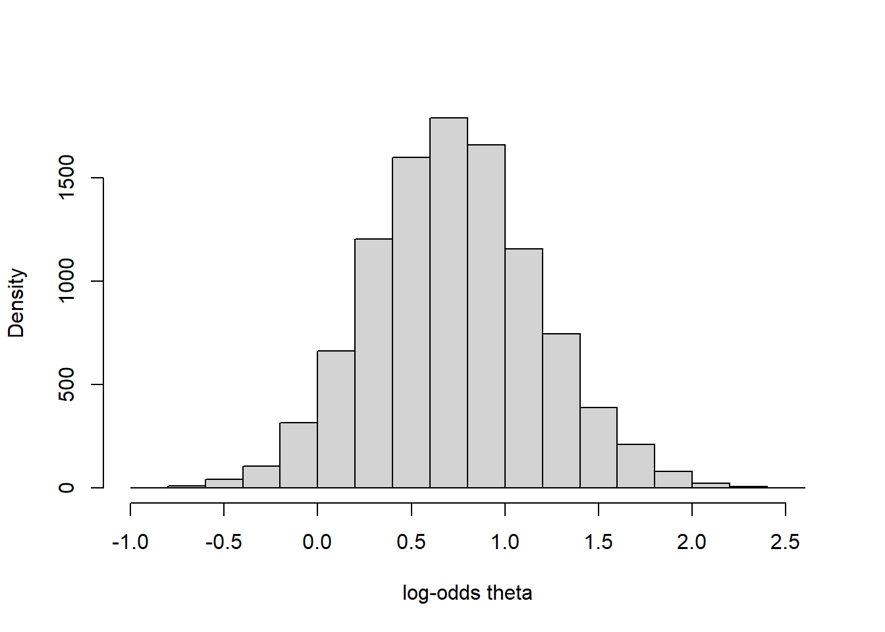
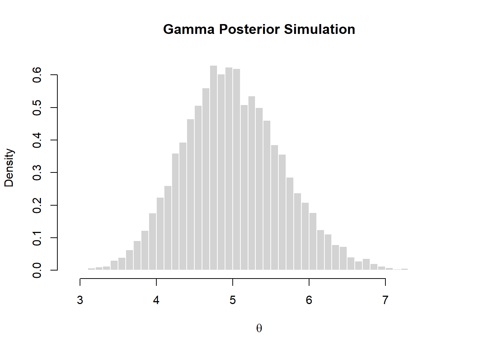

set.seed(42)
n = 20
s = 14
f = n-s
alpha0 = 2
beta0 = 2
# Use posterior formula
alpha_post = alpha0+s
beta_post = beta0+f
# Set true value as benchmark
mean_true = alpha_post/(alpha_post+beta_post)
var_true = (alpha_post*beta_post)/(((alpha_post+beta_post)**2) * (alpha_post+beta_post+1))
sd_true = sqrt(var_true)
size = 10000
rtheta = rbeta(size,alpha_post,beta_post)Bayesian Learning - Part A
Problem 1
Problem 1a)
In this task, we assume a \(Beta(\alpha_0,\beta_0)\) prior for \(\theta\) which comes from \(y_1,...,y_n|\theta\sim Bern(\theta)\). We use Monte Carlo methods to estimate the posterior and standard deviation.
The code block above defined the parameters from Bernoulli model and beta prior. Due to beta prior is a conjugate prior, we can calculate the mean and variance by formula: \[\mathbb{E}(\theta)=\frac{\alpha}{\alpha+\beta}\] \[\mathbb{V}(\theta)=\frac{\alpha \beta}{(\alpha+\beta)^2(\alpha+\beta+1)}\] We use rbeta() to simulate a group of data from true posterior. According to Figure 1, as the number of sample size increases, the estimation of postrior mean converges to the true posterior mean, approximately \(\mathbb{E}(X)=0.6667\). Figure 2 also displayed the same tendency, where the standard deviation is very close to \(\sigma = 0.0943\)
set.seed(42)
running_mean = 0
for (i in 1:size){
running_mean[i] = mean(rtheta[1:i])
}
plot(running_mean, type='l',col="blue",lwd=2,xlab = "Numbers of Sample Size", ylab="Estunate of Posterior Mean")
abline(h=mean_true,col="red",lwd=2,lty=2)
legend("topright",legend=c("Monte-Carlo Estimate","True Posterior Mean"),col=c("blue","red"),pch=15,bty="n")running_sd = 0
for (i in 1:size){
running_sd[i] = sd(rtheta[1:i])
}
plot(running_sd, type='l',col="blue",lwd=2,xlab = "Numbers of Sample Size", ylab="Estunate of Posterior Standard Deviation")
abline(h=sd_true,col="red",lwd=2,lty=2)
legend("topright",legend=c("Monte-Carlo Estimate","True Posterior Standard Deviation"),col=c("blue","red"),pch=15,bty="n")Problem 1b)
In this task, we calculate the posterior probability \(Pr(\theta<0.5|\textbf{y})\) by simulation, and compare the exact value by pbeta(). The result shows that the simulated answer is 0.0478, and the exact value is 0.0466, simulated value is pretty close to exact one.
nDraws = 10000
set.seed(42)
prob_sim = mean(rbeta(nDraws,alpha_post,beta_post)<=0.5)
prob_true = pbeta(0.5,alpha_post,beta_post)
# prob_sim = 0.0478
# prob_true ≈ 0.04656Problem 1c)
In this task, we simulate the posterior distribution of the log-odds \(\phi = log(\frac{\theta}{1-\theta})\). the method qlogis() can compute the data with log-odds transformation, which is equivalent to transformed = log(theta/(1-theta)).
set.seed(42)
theta_original = rbeta(size,alpha_post,beta_post)
theta_trans = qlogis(theta_original)
hist(theta_trans,xlab="log-odds theta",main="",ylab="Density")

Problem 2
In this task, we explore dataset ericsson on daily percentage returns on Ericsson stock. Figure 4 shows the distribution of standardized daily returns. Most values are centered around zero, but the distribution exhibits heavy tails, with occasional extreme negative returns.
load("ericsson.RData")
x = (returns - mean(returns))/sd(returns)
hist(x, 30, freq = FALSE, xlab = "daily returns (standardized)", ylab = "density",main = "")Problem 2a)
We computed the log-likelihood function over a series of candidate degrees of freedom \(\nu\) and plotted the curve. In Figure 5, we can notice that the log-likelihood curve reaches its maximum value around 7, which implies that the maximum likelihood estimate of the degree of freedon is \(\hat{\nu} \approx 7\).
nu_potential = seq(0.5,60,by=0.1)
loglike = numeric(length(nu_potential))
for (i in seq_along(nu_potential)){
loglike[i] = sum(dt(x,df=nu_potential[i],log=TRUE))
}
plot(nu_potential,loglike,type='l',xlab="potential nu values",ylab="log-likelihood",lwd=2)
nu_mle = nu_potential[which.max(loglike)]
# nu_mle = 7
abline(v=nu_mle,col="red",lty=2,lwd=2)Problem 2b)
We plot the likelihood \(L(x_1,...,x_n|\nu)=\prod_ip(x_i|\nu)\) and plotted the curve. in Figure 6, the red line and blue line represent \(\nu = 1\) and \(\nu = 10\) respectively. The likelihood peaks around \(\nu \approx 7\). Clearly, \(L(1)\) (also called Cauchy Distribution) is obviously smaller than \(L(10)\), showing that the data are heavy-tailed, but not as extreme as a Cauchy distribution.
nu_potential = seq(0.5,60,by=0.1)
likelihood = numeric(length(nu_potential))
for (i in seq_along(likelihood)){
likelihood[i] = prod(dt(x,df=nu_potential[i],log=FALSE))
}
plot(nu_potential,likelihood,type='l',xlab="Potential nu values",ylab="Likelihood",lwd=2)
abline(v=1,col="red",lty=2,lwd=2)
abline(v=10,col="blue",lty=2,lwd=2)
legend("topright",c("nu = 1","nu = 10"),col = c("red","blue"),lty=2,lwd=2)Problem 2c)
In this step, we plot the logarithm of the posterior distribution for \(\nu\), using \[\log p(\nu \mid x_1,\dots,x_n) \;\propto\; \log p(x_1,\dots,x_n \mid \nu) + \log p(\nu),\]
we evaluate the log-likelihood over a series of candidate values of \(nu\) and add the log prior. Note that the prior is \(\nu \sim \text{Exponential}(0.25)\) with the rate parameterization. The resulting curve (Figure 7) shows that the log-posterior peaks around \(\nu \approx7\).
nu_potential = seq(0.5,60,by=0.1)
log_post= numeric(length(nu_potential))
for (i in seq_along(nu_potential)){
nu = nu_potential[i]
logprior = dexp(nu,rate=0.25,log=TRUE)
loglike = sum(dt(x,df=nu,log=TRUE))
log_post[i] = loglike +logprior
}
plot(nu_potential,log_post,type='l',xlab='nu values',ylab = 'log-posterior',lwd=2)Problem 2d)
In order to plot the posterior of distribution of \(nu\), we firstly transform the log-posterior to unnormalized posterior as \[p(\nu \mid x_1,\dots,x_n) \;\propto\; p(x_1,\dots,x_n \mid \nu) p(\nu)\]
Then, we need to normalize the posterior as a true probability density function: \[p(\nu|x_1,...,x_n)=\frac{p(x_1,...,x_n|\nu)p(\nu)}{\int_0^{\infty}p(x_1,...,x_n|\nu)p(\nu)d\nu}\] we can use Riemann approximation to calculate the integral: \[p(\nu|x_1,...,x_n)\approx \frac{p(x_1,...,x_n|\nu_i)p(\nu_i)}{\sum_j p(x_1,...,x_n|\nu_j)p(\nu_j)\Delta\nu}\] where \(\Delta\nu\) means the length of each step.
Figure 8 The blue line and orange line represents the posterior and prior respectively.
unnormalized_posterior = exp(log_post)
distance = 0.1
posterior = unnormalized_posterior/(sum(unnormalized_posterior)*distance)
plot(nu_potential,posterior, type="l",col = 'blue',xlab="nu",ylab="density",lwd=2)
lines(nu_potential,dexp(nu_potential,rate=0.25),col="orange",lwd=2)
legend("topright",c("posterior","prior"),col=c("blue","orange"),lty=1,lwd=4)Problem 2e)
The defination of Posterior mean is \[\mathbb{E}（\nu|x_1,...,x_n）=\int_0^{\infty}\nu p(\nu | x_1,...,x_n)d\nu\] where \(p(\nu|x_1,...,x_n)\) is normalized posterior distribution. We use Riemann sum, same as Problem 2d, to approximate the integral: \[\mathbb{E}(\nu|x_1,...,x_n)\approx \sum_{i=1}^m\nu_i p(\nu_i|x_1,...,x_n)\Delta\nu\] and the posterior mean of \(\nu = 7.0807\)
post_mean = sum(nu_potential*posterior) * 0.1library(mvtnorm) # package with multivariate normal density
library(latex2exp) # latex maths in plotsWarning: package 'latex2exp' was built under R version 4.4.3Problem 3
Problem 3a)
The Gamma prior is conjugate to possion model. We choose rate parameterization for gamma distribution. The posterior distribution is \(p(\theta|x_1,...x_n) \sim Gamma(\alpha+n\bar{x}, \beta+n)\) where \(\alpha=7\), \(\beta=2\) from prior information.
## likelihood sample
sample_x = c(3, 5, 4, 3, 6, 8, 6, 1, 14, 3)
sample_x_size = length(sample_x)
sample_x_mean = mean(sample_x)## parameters for prior
alpha = 7
beta = 2
# posterior simulation
n_draw = 10000
theta_sample = rgamma(n_draw, alpha+sum(sample_x), beta+sample_x_size)
hist(theta_sample, breaks = 50, probability = TRUE,
col = "lightgray", border = "white",
main = "Gamma Posterior Simulation",
xlab = expression(theta))
## get all draw over 8
theta_sample_over_8 = theta_sample > 8
## calculate prob of theta>8 by using event_size/sample_size
sum(theta_sample_over_8)/n_draw[1] 0# use gamma cdf to get prob of over 8
pgamma(8, alpha+sum(sample_x), beta+sample_x_size, lower.tail = FALSE)[1] 3.291869e-05# check gamma pdf
# curve(dgamma(x, alpha+sum(sample_x), beta+sample_x_size), from=0, to=9, ylab="gamma pdf")Problem 3b)
# predictive simulation
predDraws = rnbinom(n_draw, alpha+sum(sample_x), (beta+sample_x_size)/(beta+sample_x_size+1))
hist(predDraws,
xlab = "Max weight on a future day", ylab = "Predictive density",
main = "Predictive density max weight - single day", col = "lightgray", border = "white")## get all draw over 8
temp = predDraws >= 8
## calculate prob of theta>=8 by using event_size/sample_size
mean(temp)[1] 0.1369# use gamma cdf to get prob of over 8
# negbinomial is discrete, cdf <= x, so using > 7
pnbinom(7, alpha+sum(sample_x), (beta+sample_x_size)/(beta+sample_x_size+1), lower.tail = FALSE)[1] 0.141594Problem 3c)
The utility function is a function of random varibable \(X_{11}\). And \(a_{11}\) is treated as a constant. \[\begin{equation} U = \begin{cases} 10a_{11} & \text{if} X_{11} \geq a_{11}, \\ 10X_{11} - 7(a_{11}-X_{11}) & \text{if} X_{11} < a_{11} \end{cases} \end{equation}\]
With simplification, it should be \[\begin{equation} U = \begin{cases} 10a_{11} & \text{if } X_{11} \geq a_{11}\\ 17X_{11} - 7a_{11} & \text{if } X_{11} < a_{11} \end{cases} \end{equation}\] The expected value of utility function is \(E(U)=10a_{11}*Pr(X_{11} \geq a_{11}|a_{11},x_{1}...,x_{10}) +E(17X_{11}-7a_{11}|X_{11}<a_{11})*Pr(X_{11} < a_{11}|a_{11},x_{1}...,x_{10})\) It is required to find the maximal value of expected utility. The uncertainty comes from demand \(X_{11}\) and storage \(a_{11}\). The predictive distribution of \(X_{11}\) is from simulation. And only using \(a_{11}\) as varibale and get the maximizer in expected utility.
aGrid = seq(0, 15, length = 1000)
EL = rep(length(aGrid))
for (i in 1:length(aGrid)){
a = aGrid[i]
p = mean(predDraws >= a)
EL[i] = 10*a*p +(17*mean(predDraws[predDraws<a])-7*a)*(1-p)
}
plot(aGrid, EL, xlab = "storage, a", ylab = "Expected Utility", type = "l",
lwd = 3, col = "lightgray")
abline(v = aGrid[which.max(EL)], lty = "dotted")maximizer = aGrid[which.max(EL)]
maximizer[1] 5Problem 4
Given information:
\[ temp = \beta_0 + \beta_1*time + \beta_2*time^2 + \epsilon, \ \epsilon\sim N(0, \sigma^2) \]
#install.packages("remotes") # Uncomment this the first time
library(remotes)
#install_github("StatisticsSU/SUdatasets") # Uncomment this the first time
library(SUdatasets)
library(mvtnorm)
library(ggplot2)
head(tempLinkoping) time temp
1 0.002732240 0.1
2 0.005464481 -4.5
3 0.008196721 -6.3
4 0.010928962 -9.6
5 0.013661202 -9.9
6 0.016393443 -17.1summary(tempLinkoping) time temp
Min. :0.002732 Min. :-17.100
1st Qu.:0.252049 1st Qu.: 1.925
Median :0.501366 Median : 6.900
Mean :0.501366 Mean : 7.524
3rd Qu.:0.750683 3rd Qu.: 14.575
Max. :1.000000 Max. : 23.100 cat("The dataset contains", length(tempLinkoping$time), "observations.")The dataset contains 366 observations.Problem 4a) Determine a suitable prior distribution
Given prior information:
\[ \boldsymbol{\beta} \vert \sigma^2 \sim N(\boldsymbol{\mu}_0,\sigma^2\boldsymbol{\Omega}_0^{-1}) \]
\[ \sigma^2 \sim \mathrm{inv-}\chi^2(\nu_0, \sigma_0^2) \] The following figure shows the regression curves simulated from a beta prior with \(\mu_0 (10, 100, -100)^T\). From Figure 9, most of the temperatures variate above 0 degree which is higher than my belief of Linkoping’s temperatures.
#beta prior ~ normal
mu0 = c(10,100,-100)
sigma_matrix0 = 0.01*diag(3)
#sigma_sq prior ~ inv-x^2
nu0 = 3
sigma0_sq = 1
#store simulated betas, sigma^2 and temps
m = 200
time_grid =tempLinkoping$time
temp_vals = matrix(NA, nrow=m, ncol=length(time_grid))
# Simulator for the scaled inverse Chi-square distribution
rScaledInvChi2 <- function(n, v_0, sigma2_0){
return((v_0*sigma2_0)/rchisq(n, df = v_0))
}
#simulated sigma_prior and beta_prior
set.seed(42)
sigma_sq_draws = rScaledInvChi2(m, v_0=nu0, sigma2_0 = sigma0_sq)
for (i in 1:m){
sigma_sq_i = sigma_sq_draws[i]
betas_i = rmvnorm(1, mean=mu0, sigma=(sigma_sq_i*solve(sigma_matrix0)))
temp_vals[i, ] = betas_i[1] + betas_i[2]*time_grid + betas_i[3]*time_grid^2
}
plot(
NA, NA,
xlim = c(0, 1),
ylim = range(temp_vals),
xlab = "Normalized Time",
ylab = "Temperatures",
main = "Simulated Regression Curves from Prior"
)
# Now overlay all the curves
for (i in 1:nrow(temp_vals)) {
lines(time_grid, temp_vals[i, ], col = rgb(0, 0, 0, alpha = 0.3))
}The original prior information is much higher than my belief. Figure 10 is the regression curves plot with updated prior information \(\mu_0 (5, 70, -70)^T\), it clearly shows that half of the simulated temperature curves variate below 0 degree which satisfies my beliefs of temperature variation in Linkoping.
#beta prior ~ normal updated
mu0 = c(5,70,-70)
Omega_matrix0 = 0.01*diag(3)
#sigma_sq prior ~ inv-x^2
nu0 = 3
sigma0_sq = 1
#store simulated betas, sigma^2 and temps
m = 200
time_grid = seq(0, 1, length.out=366)
temp_vals = matrix(NA, nrow=m, ncol=length(time_grid))
# Simulator for the scaled inverse Chi-square distribution
rScaledInvChi2 <- function(n, v_0, sigma2_0){
return((v_0*sigma2_0)/rchisq(n, df = v_0))
}
#simulated sigma_prior and beta_prior
set.seed(42)
sigma_sq_draws = rScaledInvChi2(m, v_0=nu0, sigma2_0 = sigma0_sq)
for (i in 1:m){
sigma_sq_i = sigma_sq_draws[i]
betas_i = rmvnorm(1, mean=mu0, sigma=(sigma_sq_i*solve(Omega_matrix0)))
temp_vals[i, ] = betas_i[1] + betas_i[2]*time_grid + betas_i[3]*time_grid^2
}
plot(
NA, NA,
xlim = c(0, 1),
ylim = range(temp_vals),
xlab = "Normalized Time",
ylab = "Temperatures",
main = "Simulated Regression Curves from Updated Prior"
)
# Now overlay all the curves
for (i in 1:nrow(temp_vals)) {
lines(time_grid, temp_vals[i, ], col = rgb(0, 0, 0, alpha = 0.3))
}Problem 4b) Simulating from the posterior
From the given information, a Gaussian linear regression with a conjugate prior will have a posterior with the same distribution family. The following is the joint posterior information.
\[ \beta \mid\sigma^2,y \sim N(\mu_n, \sigma^2 \Omega_n^{-1}) \] \[ \sigma^2\mid y \sim Inv-\chi^2(\nu_n, \sigma^2_n) \] \[ \Omega_n = X^TX + \Omega_0 \]
\[ \mu_n = \Omega_n^{-1} (X^Ty + \Omega_0\mu_0) \] \[ \nu_v = \nu_0 +n \]
\[ \sigma^2_n = (\nu_0\sigma^2_0 + y^Ty + \mu_0^T\Omega_0\mu_0 - \mu_n^T\Omega_n\mu_n) / \nu_n \] The parameters information from prior and likelihood/model are given, we can compute the posterior parameters using the following code.
#settings before simulation
time = tempLinkoping$time
X = cbind(1, time, time^2)
y = tempLinkoping$temp
n = length(y)
#beta prior ~ normal updated
mu0 = c(5,70,-70)
Omega0 = 0.01*diag(3)
#sigma_sq prior ~ Inv-x^2
nu0 = 3
sigma0_sq = 1
#posterior settings
Omega_n = t(X) %*% X + Omega0
mu_n = solve(Omega_n) %*% (t(X) %*% y + Omega0 %*% mu0)
nu_n = nu0 + n
sigma_n_sq = (nu0*sigma0_sq + t(y)%*%y + t(mu0)%*%Omega0%*%mu0 - t(mu_n)%*%Omega_n%*%mu_n) / nu_nAfter computing the posterior parameters, we can simulate samples from the posterior of \(\sigma^2\). Then, the simulated samples of \(\sigma^2\) can be plugged into \(\beta\mid\sigma^2\) ’s posterior distribution, which is multivariate normal. Finally, we can draw samples from \(\beta\) ’s posterior distribution and visualize the marginal posteriors of each parameter using histograms as shown in Figure 11.
m = 10000
sigma_sq_post_draws = rScaledInvChi2(m, nu_n, sigma_n_sq)
#store betas draws
beta_post_draws = matrix(NA, nrow=m, ncol=ncol(X))
for (i in 1:m){
sigma_sq_post_i = sigma_sq_post_draws[i]
beta_post_var = sigma_sq_post_i * solve(Omega_n)
beta_post_draws[i, ] = rmvnorm(1, mean=as.vector(mu_n), sigma=beta_post_var)
}
par(mfrow = c(2, 2))
beta_names = expression(beta[0], beta[1], beta[2])
beta_mains =c("Intercept", "Time", "Time^2")
for (i in 1:length(beta_names)){
hist(beta_post_draws[, i], main=beta_mains[i], xlab=beta_names[i],
col="skyblue",
freq=FALSE)
}
hist(sigma_sq_post_draws, main="Variance", xlab=expression(sigma^2), col="skyblue", freq=FALSE)Since the marginal posterior distributions of coefficients \(\beta = (\beta_0, \beta_1, \beta_3)\) are known, the posterior distribution of the regression function can be computed by plugging the simulated \(\beta\) posterior draws into the regression model: \[ f(time) = \beta_0 + \beta_1 * time + \beta_2 * time^2 \] After the posterior distribution of the regression function is known, we can simply compute the posterior median and the equal-tail 95% confidence interval for the regression at each time point. Figure 12 contains the data point from Linkoping dataset and a posterior median curve of the regression function with equal-tail 95% confidence interval.
# Predictive curves
time_grid = tempLinkoping$time
X_grid = cbind(1, time, time^2)
# X_grid: 366x3, beta_post_draws: 10000x3, transpose to 3x10000
f_post = X_grid %*% t(beta_post_draws)
f_median = apply(f_post, 1, median)
f_lower <- apply(f_post, 1, quantile, probs = 0.025)
f_upper <- apply(f_post, 1, quantile, probs = 0.975)
# Base R plot version of predictive regression curve
# Set up base plot
plot(time_grid, f_median, type = "l", lwd = 2, col = "red",
ylim = range(c(f_lower, f_upper, y)),
xlab = "Normalized Time", ylab = "Temperature",
main = "Posterior Median of Regression Curve with 95% C.I")
# Add credible interval (ribbon)
polygon(c(time_grid, rev(time_grid)),
c(f_lower, rev(f_upper)),
col = rgb(70/255, 130/255, 180/255, 0.4), border = NA)
# Add observed data points
points(time, y, pch = 20, col = "gray40")
# Optionally add median line again (drawn over ribbon)
lines(time_grid, f_median, col = "red", lwd = 2)From the posterior median of the regression curve, we can clearly confirm that the 95% confidence interval band does not contain all the observed data point, because the confidence interval band only reflect the uncertainty of the posterior median regression function without the noise term \(\epsilon \sim N(0, \sigma^2)\). Therefore, it is not necessary for the confidence interval band of the regression function to include every data points.
Problem 4c) Locating the day with the highest expected temperature
Given the highest expected temperature at each time point \(x_{max}\):
\[ x_{max} = -\frac{\beta_1}{2\beta_2} \] Since the posterior distribution of \(\beta\) is known from previous problem, we can use the samples from the distribution to compute the values of \(x_{max}\) at each time point, and the values can be visualized through a histogram as shown in Figure 13.
beta1_post_samples = beta_post_draws[, 2]
beta2_post_samples = beta_post_draws[, 3]
x_max = -beta1_post_samples / (2*beta2_post_samples)
par(mfrow=c(1, 2))
hist(x_max, breaks=50, freq = FALSE, col="lightblue",
main="Posterior of x_max",
xlab="Time With Highest Expected Temperature")
#unnormalized time to regular day
hist(x_max*366, breaks=50, freq = FALSE, col="steelblue",
main="Posterior of x_max",
xlab="Day With Highest Expected Temperature")